El día
Ceremonia
12:30
Cóctel
13:30
Banquete
15:00
Fiesta
17:00
Todo tendrá lugar en el Cortijo La Esperanza, en Saleres (Granada).
Cómo llegarAlojamiento
Puedes reservar en el hotel [Nombre del hotel] de Granada con un descuento.
Si lo prefieres, puedes buscar otras opciones en la ciudad o cerca de Saleres.
[Cómo reservar y código de descuento]
Transporte
Autobús desde Granada, ida y vuelta
Os facilitaremos los horarios de los buses más adelante.
Confirmar asistencia
[Texto], antes del [Fecha límite].
Confirmar asistenciaRegalo
El mejor regalo es vuestra compañía en este día tan especial.
Para quienes deseéis tener un detalle con nosotros, podéis hacerlo en el siguiente número de cuenta:
[IBAN]

Recomendaciones
Para aquellos que quieran disfrutar de la ciudad, os dejamos aquí nuestros favoritos.
Ver nuestros favoritos